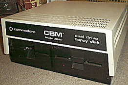
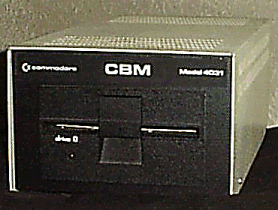
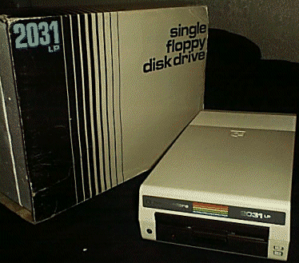
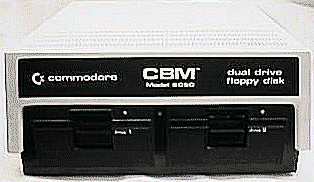
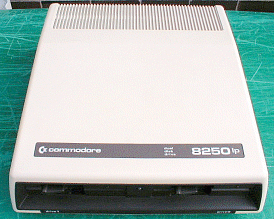
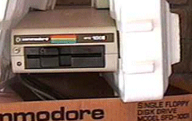
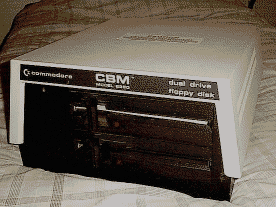
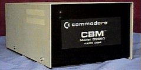

PET index - disk gallery
(Images courtesy Bo Zimmermann, from his CBM gallery.)
|  | The 2040, 3040 and 4040 drives all looked like this |
| The single-drive incarnation, the 4031 ... |  |
|  | ... and its low-profile brother |
| The 8050 and 8205 drives don't look much different from the 4040 |  |
|  | ... but the 8250LP certainly does! |
| And this 1001 almost looks like 1541... |  |
|  | The huge 8" disk drive 8280 |
| Commodore even sold harddrives for the PET, the 9060 and 9090 |  |
PET index V1.0 (c) 1998-2005 A. Fachat